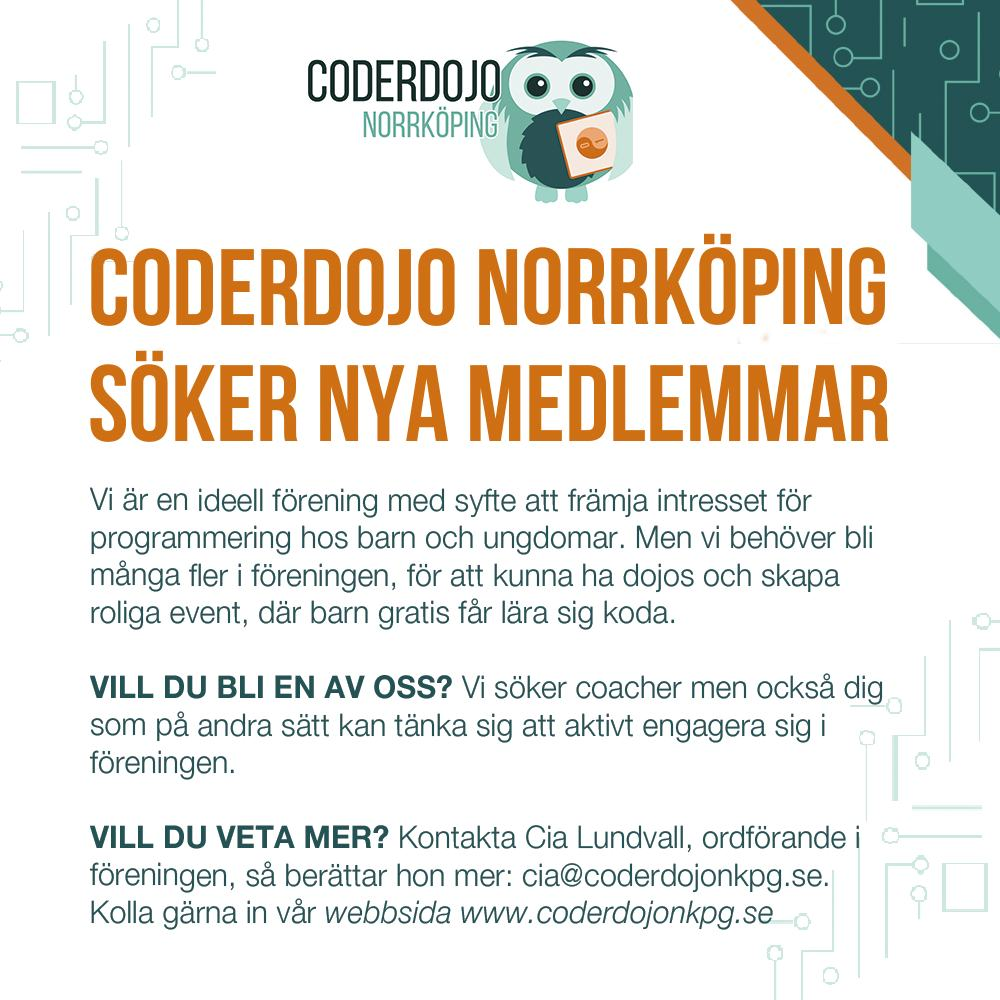

Är du tjej eller kille mellan sju och 17 år och vill testa på att koda?
Då är du välkommen till CoderDojo Norrköping.
 Kommande dojos hittar du på Eventbrite
Kommande dojos hittar du på Eventbrite
Tyvärr inga dojos i höst!
Då föreningen i nuläget har svårt att hitta coacher och framtida styrelsemedlemmar, kan vi tyvärr inte erbjuda några dojos under hösten. Om förutsättningarna ändras, kommer vi att meddela detta på fb och vår hemsida. Vi håller tummarna!

Viktigt beslut att ta vid Extrastämma ht 2023
Vid Vårstämman 2023 togs motvilligt beslutet
att lägga ner CoderDojo Norrköping, då vi
har svårt att hitta personer som har tid och
möjlighet att engagera sig i föreningen.
I enlighet med föreningens stadgar ska ett
slutgiltigt beslut tas vid nästkommande
stämma (extrastämma alt höststämma).
Datum för Extrastämma kommer att delges
föreningens medlemmar minst två veckor i
förväg - via mejl, Slack samt på fb och
hemsidan.
Föreningen hoppas dock att hitta en lösning,
så vi kan fortsätta inspirera och coacha barn
och ungdomar i Norrköping att programmera.
Kom och koda med oss!
Dagens värld är byggt av kod. Den är språket som vi använder för att skapa appar, hemsidor eller för att styra robotar. Att koda handla om att lösa problem på kreativa sätt och om att förstå hur en dator »tänker«.
Att lära sig att programmera är roligare och enklare än vad många tror. Vi tror att alla kan koda!
Om CoderDojo
CoderDojo är en internationell rörelse med målet att fler ungdomar ska få testa på att koda. Det är gratis att komma till CoderDojo och det är öppet för tjejer och killar 7-17 år.
I Norrköping är du välkommen till en dojo lördagar kl. 11-13 där vi coachar dig gratis i programmering.
Tack till våra sponsorer
CoderDojo har fått medel av Polytekniska föreningen i Norrköping. Det har gjort att vi kunnat köpa in roligt programmeringsmaterial till våra dojos. Stort tack!
Stort tack till ICA Strömmen som ger oss rabatt på fikabrödet till våra dojos. Och tack till Teconra AB och GLAZZ.se som valt att sponsra oss, så vi bättre kan sprida information om vår verksamhet.
Vi tackar Polytekniska Föreningen, Teconra AB och GLAZZ.se för stödet!
Följ CoderDojo Norrköping
Vad händer under de två timmarna?

Är det en kurs?
Nej, det är inte en vanlig kurs där du måste delta varje gång. CoderDojo skiljer sig även från en kurs då deltagarna själva kan styra vad de vill lära sig.
Våra coacher ger förslag på hur du kan komma igång med programmering. Välj något du tycker är kul, sätt dig vid en dator och försök lösa uppgiften. Har du egna idéer på vad du skulle vilja göra är det bara att prata med någon av coacherna.

Vilka får vara med?
Alla tjejer och killar mellan 7-17 år. Barn under 12 måste ha sällskap av en vuxen. Ingen förkunskap krävs, man kommer för att man är nyfiken att lära sig.

Vilka står bakom?
CoderDojo Norrköping startades av studenter vid Linköpings universitet våren 2014. Sedan dess har vi haft över 50 coacher som är studenter eller yrkesverksamma, som alla som tycker det är roligt med programmering och brinner för att fler barn ska få lära sig att koda. Mer om föreningen